The heatmap_layout()/ggheatmap() function provides a powerful way to create
customizable heatmaps in R using ggplot2. This vignette will guide you through
its usage.
input data
The data input can be a numeric or character vector, a data frame, and any other
data which can be converted into a matrix by fortify_matrix().
set.seed(123)
small_mat <- matrix(rnorm(81), nrow = 9)
rownames(small_mat) <- paste0("row", seq_len(nrow(small_mat)))
colnames(small_mat) <- paste0("column", seq_len(ncol(small_mat)))
library(ggalign)
#> Loading required package: ggplot2
ggheatmap(small_mat)
#> → heatmap built with `geom_tile()`
heatmap body
For ggplot2 usage, the matrix input will be converted into a long formated
data frame when drawing. The default mapping will use aes(.data$.x, .data$.y),
but can be controlled using mapping argument. The data in the underlying
ggplot object contains following columns:
.xpaneland.ypanel: the column and row panel.xand.y: thexandycoordinates.row_namesand.column_names: A factor of the row and column names of the original matrix (only applicable when names exist)..row_indexand.column_index: the row and column index of the original matrix.value: the actual matrix value.
You can treat the ggheatmap()/heatmap_layout() object as a standard
ggplot2 object with default mapping and data. This means you can add ggplot2
layers or elements just like in any ggplot object.
ggheatmap(small_mat) + geom_point() + scale_fill_viridis_c()
#> → heatmap built with `geom_tile()`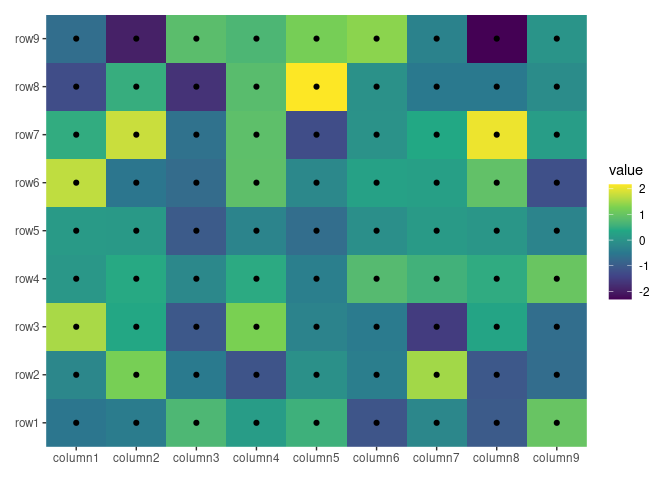
By default, ggheatmap()/heatmap_layout() adds a heatmap layer. If the matrix
has more than 20,000 cells (nrow * ncol > 20000), it uses geom_raster() for
performance efficiency; for smaller matrices, geom_tile() is used. You can
explicitly choose the layer by providing a single string ("raster" or
"tile") in the filling argument.
ggheatmap(small_mat, filling = "raster")
ggheatmap(small_mat, filling = "tile")
If you set filling = NULL, a blank heatmap will be drawn, allowing for
customized filling geoms. In this way, you must set fill mapping manually.
ggheatmap(small_mat, filling = NULL) +
geom_tile(aes(fill = value), color = "black", width = 0.9, height = 0.9)A heatmap pie charts:
set.seed(123)
ggheatmap(matrix(runif(360L), nrow = 20L), filling = NULL) +
geom_pie(aes(angle = value * 360, fill = value))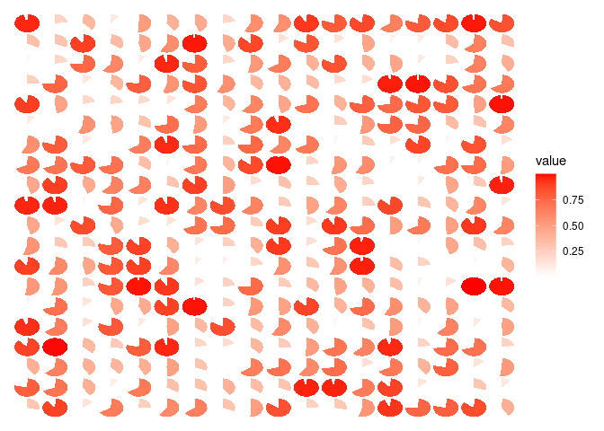
If you want more complex customization of pie charts, try using
ggforce::geom_arc_bar() instead.
rasterization
When working with large heatmaps, it’s often beneficial to rasterize the heatmap
body layer. You can achieve this by using the raster_magick() function. By
default, the res will match the resolution of the current device, but
specifying a different value can reduce the resolution of the rasterized heatmap
body.
ggheatmap(small_mat, filling = NULL) +
raster_magick(geom_tile(aes(fill = value)), res = 50)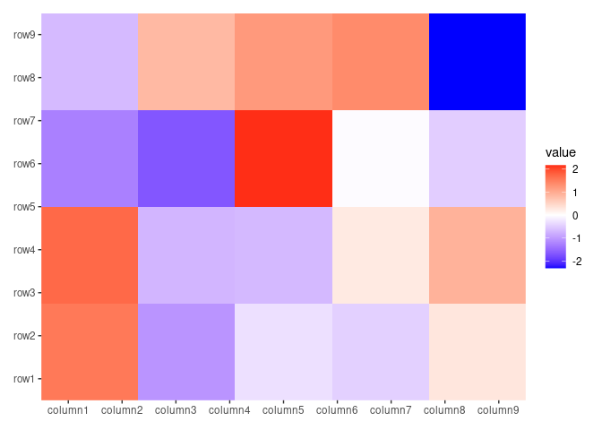
For raster image post-processing, similar to the approach in ComplexHeatmap,
you can leverage the raster_magick() function. This function uses the magick
package to apply custom image resizing with filters. Based on a rough testing,
rasterization becomes advantageous for heatmaps with more than 5000 x 5000
cells compared to using pure geom_raster().
ggheatmap(small_mat, filling = NULL) +
# Use `magick::filter_types()` to check available `filter` arguments
raster_magick(geom_raster(aes(fill = value)),
magick = function(image) {
magick::image_resize(image,
# we resize to the 50% of width
geometry = "50%x", filter = "Lanczos"
)
}
)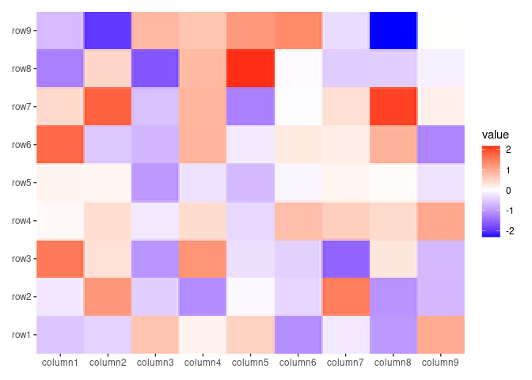
Note: When using magick::image_resize(), you should specify the geometry
argument to resize the image. If only the filter is specified, it will only
distort the image data (though subtle). For more information on image resizing,
refer to
ImageMagick’s resize documentation.
You can rasterize all plots in the layout directly with raster_magick(). This
method works for both ggheatmap()/quad_layout() and
ggstack()/stack_layout() objects.
Additionally, You can use external packages like ggrastr or ggfx to rasterize the heatmap body.
ggheatmap(small_mat, filling = FALSE) +
ggrastr::rasterise(geom_tile(aes(fill = value)), dev = "ragg")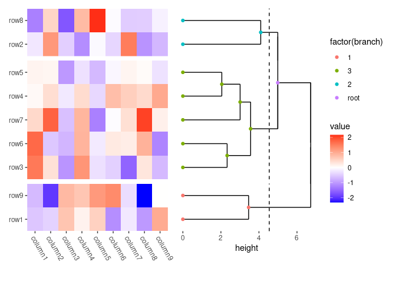
You can also rasterize all plots in the layout directly with
ggrastr::rasterise(). This method works for both ggheatmap()/quad_layout()
and ggstack()/stack_layout() objects. Indeed, the core code of
raster_magick() was adopted from ggrastr::rasterise().
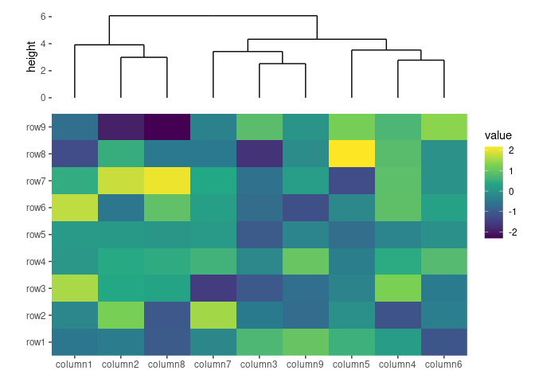
Furthermore, ggfx offers many image filters that can be applied to ggplot2 layers.
heatmap annotations
A heatmap typically has two observation axes (rows and columns), which can be
reordered or supplemented with additional information. In ggheatmap(),
annotations are handled by a stack_layout() object, specifically
stack_align(), which aligns the observations. This object can hold multiple
plots and can be positioned at the top, left, bottom, or right of the heatmap.
Note that ggalign use the concept of "number of observations" in the
vctrs package or NROW()
function. When aligning the observations, you must ensure the number of
observations is equal. For column annotations, the layout matrix will be
transposed before use. This is necessary because column annotations use heatmap
columns as observations, but we need rows.
quad_anno()
By default, heatmap_layout()/ggheatmap() do not initialize an active
context, which means that all additions are directed within the heatmap body.
You can use quad_anno() to set the active context, directing all subsequent
additions to the specified annotation position. The quad_anno() function has
the following aliases:
-
anno_top: A special case ofquad_annowithposition = "top". -
anno_left: A special case ofquad_annowithposition = "left". -
anno_bottom: A special case ofquad_annowithposition = "bottom". -
anno_right: A special case ofquad_annowithposition = "right".
The annotations allows for custom layout adjustments and the addition of various
plot types. In the following example, align_kmeans() is used to group the
columns into three panels. It doesn’t matter if this is added to the top or
bottom since it won’t add a plot area:
ggheatmap(small_mat) +
# we set the active context to the top annotation
anno_top() +
# we split the observations into 3 groups by kmeans
align_kmeans(3L)
#> → heatmap built with `geom_tile()`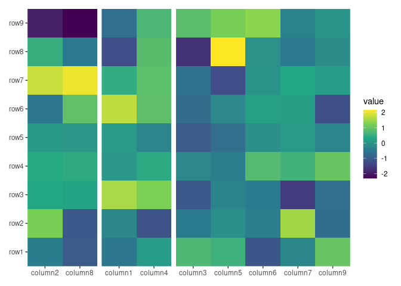
We can add any align_*() function to the annotation. For more details on
align_*() functions, refer to vignette("layout-customize") and
vignette("layout-plot").
ggheatmap(small_mat) +
# in the heatmap body, we set the axis text theme
theme(axis.text.x = element_text(angle = -60, hjust = 0)) +
# we set the active context to the right annotation
anno_right() +
# in the right annotation, we add a dendrogram
align_dendro(k = 3L) +
# in the dendrogram, we add a point layer
geom_point(aes(color = factor(branch)))
#> → heatmap built with `geom_tile()`In this example:
-
anno_right()change the active context to the right of the heatmap. -
align_dendro(k = 3L)adds a dendrogram to this right-side annotation context and sets itself as the active plot in the annotation stack. -
geom_point(aes(color = factor(branch)))is then added to this active plot within the annotation stack, here, it means thealign_dendro()plot.
quad_active()
To remove the active context and redirect additions back to the heatmap body,
you can use quad_active().
ggheatmap(small_mat) +
# we set the active context to the top annotation
anno_top() +
# we split the observations into 3 groups by kmeans
align_kmeans(3L) +
# remove any active annotation
quad_active() +
# set fill color scale for the heatmap body
scale_fill_viridis_c()
#> → heatmap built with `geom_tile()`
quad_switch()/hmanno()
We also provide quad_switch()/hmanno() (heatmap annotation) which integrates
quad_active() and quad_anno() into one function for ease of use. Feel free
to use any of these functions to streamline your annotation process.
ggheatmap(small_mat) +
# we set the active context to the top annotation
quad_switch("t") +
# we split the observations into 3 groups by kmeans
align_kmeans(3L) +
# remove any active annotation
quad_switch() +
# set fill color scale for the heatmap body
scale_fill_viridis_c()
#> → heatmap built with `geom_tile()`
ggheatmap(small_mat) +
# we set the active context to the top annotation
hmanno("t") +
# we split the observations into 3 groups by kmeans
align_kmeans(3L) +
# remove any active annotation
hmanno() +
# set fill color scale for the heatmap body
scale_fill_viridis_c()
#> → heatmap built with `geom_tile()`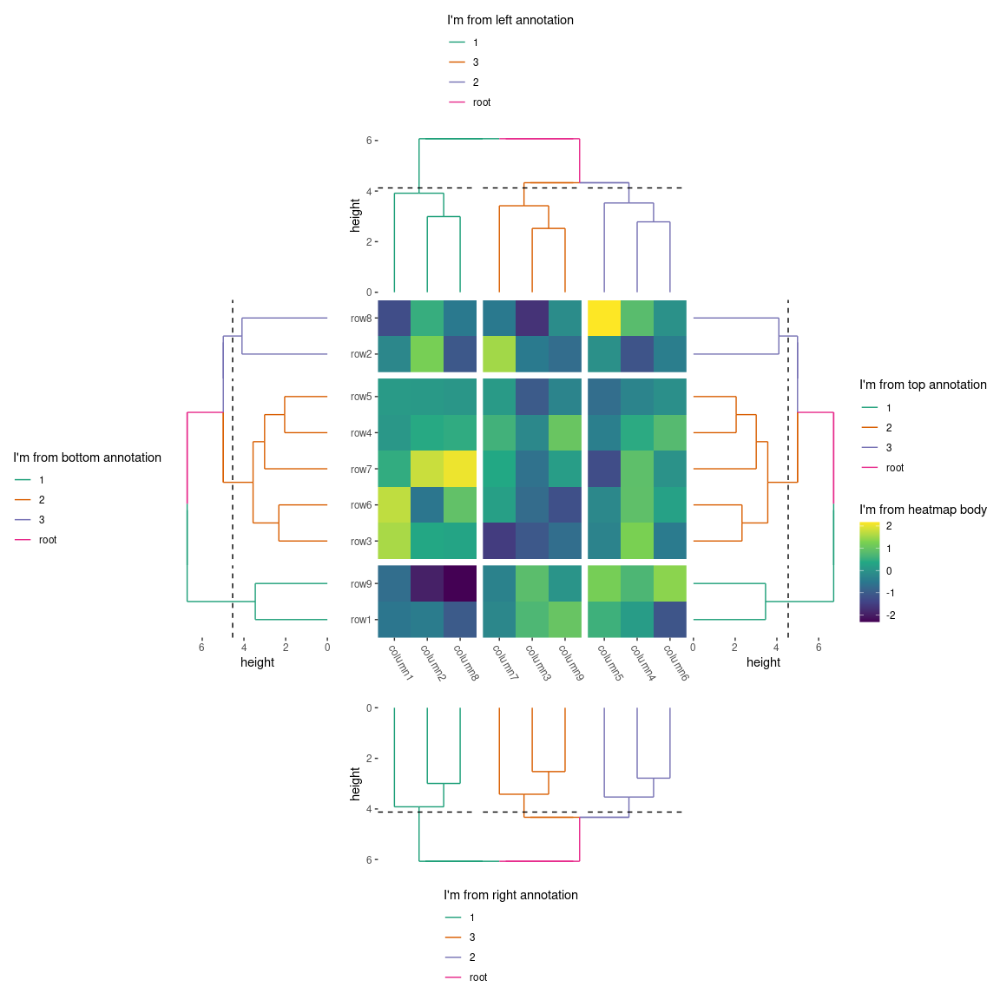
You may wonder about the prefix quad_. The ggheatmap() function is a
specialized version of quad_layout(), designed to simplify the creation of
heatmap plots by integrating essential elements for a standard heatmap layout.
Both quad_anno() and quad_active() are functions designed for
quad_layout().
Plot Size
Heatmap Body Size
You can specify the relative sizes of the heatmap body using the width and
height arguments in the ggheatmap() function.
ggheatmap(small_mat, height = 2) +
anno_top() +
align_dendro()
#> → heatmap built with `geom_tile()`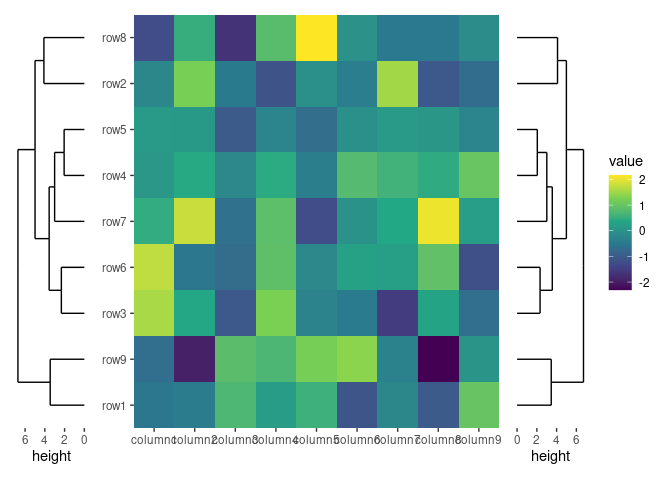
Alternatively, the quad_active() function allows you to control the heatmap
body sizes.
ggheatmap(small_mat) +
quad_active(height = 2) +
anno_top() +
align_dendro()
#> → heatmap built with `geom_tile()`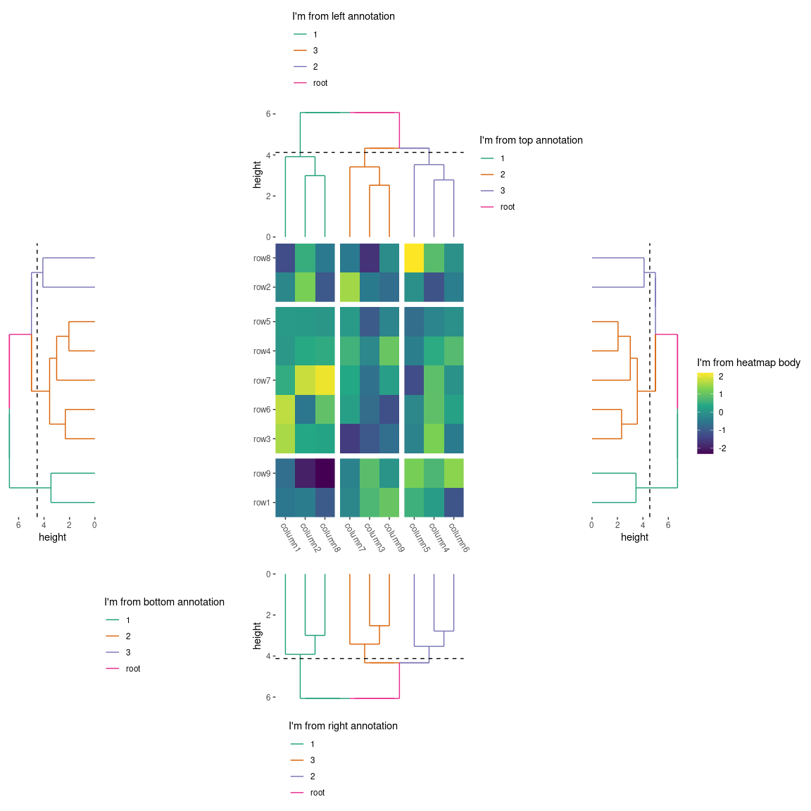
Annotation Stack Size
The quad_anno() function allows you to control the total annotation stack
size. The size argument controls the relative width (for left and right
annotations) or height (for top and bottom annotations) of the whole annotation
stack.
ggheatmap(small_mat) +
anno_top(size = 1) +
align_dendro()
#> → heatmap built with `geom_tile()`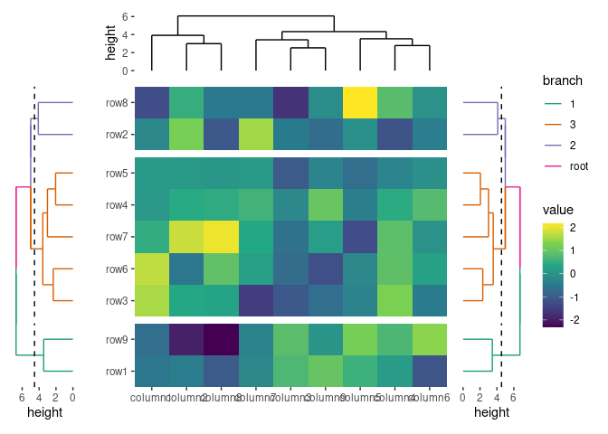
You can also specify it as an absolute size using unit():
ggheatmap(small_mat) +
anno_top(size = unit(30, "mm")) +
align_dendro()
#> → heatmap built with `geom_tile()`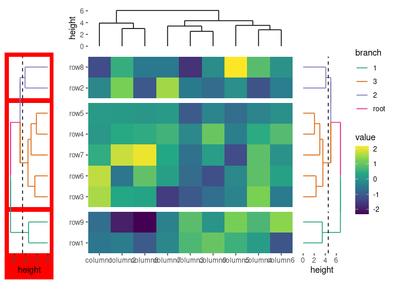
Single Plot Size
All align_*()/ggfree() functions that add plots in the annotation stack have
a size argument to control the relative width (for left and right
annotations) or height (for top and bottom annotations) of the single plot in
the annotation stack.
ggheatmap(small_mat) +
anno_left(size = 0.2) +
ggalign(data = rowSums, aes(x = value), size = unit(10, "mm")) +
geom_bar(
aes(y = .y, fill = factor(.y)),
stat = "identity", orientation = "y"
) +
scale_fill_brewer(palette = "Set1", guide = "none")
#> → heatmap built with `geom_tile()`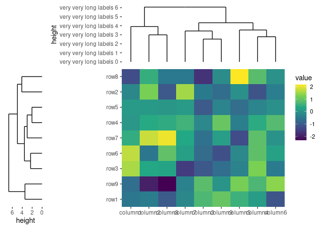
Session information
sessionInfo()
#> R version 4.4.2 (2024-10-31)
#> Platform: x86_64-pc-linux-gnu
#> Running under: Ubuntu 22.04.5 LTS
#>
#> Matrix products: default
#> BLAS: /usr/lib/x86_64-linux-gnu/openblas-pthread/libblas.so.3
#> LAPACK: /usr/lib/x86_64-linux-gnu/openblas-pthread/libopenblasp-r0.3.20.so; LAPACK version 3.10.0
#>
#> locale:
#> [1] LC_CTYPE=C.UTF-8 LC_NUMERIC=C LC_TIME=C.UTF-8
#> [4] LC_COLLATE=C.UTF-8 LC_MONETARY=C.UTF-8 LC_MESSAGES=C.UTF-8
#> [7] LC_PAPER=C.UTF-8 LC_NAME=C LC_ADDRESS=C
#> [10] LC_TELEPHONE=C LC_MEASUREMENT=C.UTF-8 LC_IDENTIFICATION=C
#>
#> time zone: UTC
#> tzcode source: system (glibc)
#>
#> attached base packages:
#> [1] stats graphics grDevices utils datasets methods base
#>
#> other attached packages:
#> [1] ggalign_0.0.5.9000 ggplot2_3.5.1
#>
#> loaded via a namespace (and not attached):
#> [1] gtable_0.3.6 jsonlite_1.8.9 dplyr_1.1.4 compiler_4.4.2
#> [5] Rcpp_1.0.13-1 tidyselect_1.2.1 ggbeeswarm_0.7.2 magick_2.8.5
#> [9] jquerylib_0.1.4 systemfonts_1.1.0 scales_1.3.0 textshaping_0.4.0
#> [13] yaml_2.3.10 fastmap_1.2.0 R6_2.5.1 labeling_0.4.3
#> [17] generics_0.1.3 knitr_1.49 tibble_3.2.1 bookdown_0.41
#> [21] munsell_0.5.1 RColorBrewer_1.1-3 bslib_0.8.0 pillar_1.9.0
#> [25] rlang_1.1.4 utf8_1.2.4 cachem_1.1.0 xfun_0.49
#> [29] sass_0.4.9 viridisLite_0.4.2 cli_3.6.3 withr_3.0.2
#> [33] magrittr_2.0.3 digest_0.6.37 grid_4.4.2 beeswarm_0.4.0
#> [37] lifecycle_1.0.4 vipor_0.4.7 ggrastr_1.0.2 vctrs_0.6.5
#> [41] evaluate_1.0.1 glue_1.8.0 farver_2.1.2 ragg_1.3.3
#> [45] fansi_1.0.6 colorspace_2.1-1 rmarkdown_2.29 tools_4.4.2
#> [49] pkgconfig_2.0.3 htmltools_0.5.8.1